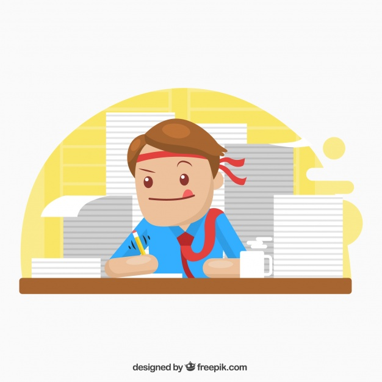

On working hard.....
There are some people who choose minimalism as a means to escape work. While I understand the appeal, I am not one of them. I enjoy hard work. I find happiness and joy in it. And I believe, without a doubt in my mind, those who feel the most fulfilled at the end of their lives are those who have chosen to work hard during it. Now, just to be clear, I am not advocating to be busy just to be busy. I am advocating for the importance of doing your work (whether paid or unpaid) in a focused and deliberate way, putting your whole self into it. Doing the best you can, to accomplish the most you can, with the one life you’ve got. But if one has chosen minimalism as a lifestyle, where do we find the motivation to learn how to work hard? After all, if we are content to own less (even prefer it), what is the point of hard work and striving for success? If the goal of work isn’t to earn more and more money so we can buy bigger and bigger houses and fancier and more expensive cars, then what’s the point? If we’ve chosen to measure life’s success in more important terms than material possessions, why would we choose to work hard?
 Learn more